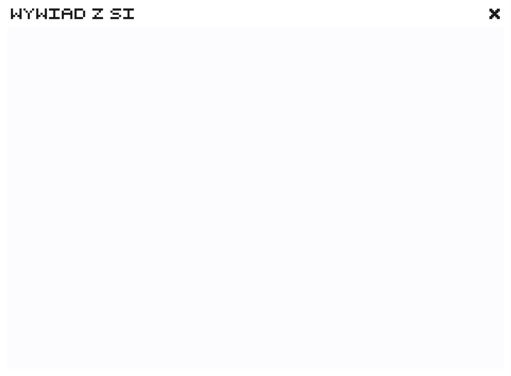
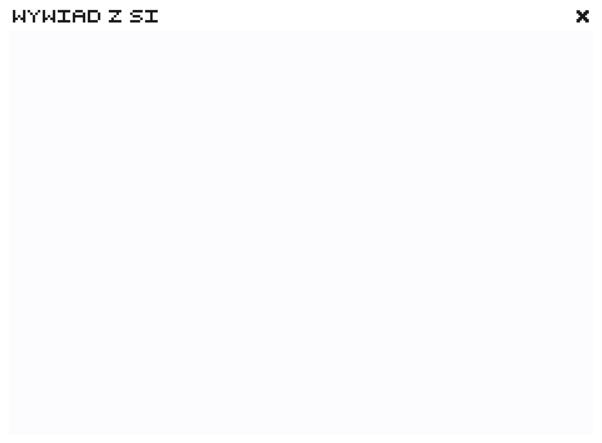

Jak wypłynie na nas technologia? Jak będzie wyglądać nasza przyszłość?
Takie pytania stawiamy sobie już od kilkudziesięciu lat. Co ciekawe, dużą część naszej technologicznej codzienności przewidział i opisał w swoich licznych książkach Lem.
Jedną ze spełnionych “przepowiedni” Lema był e-book/tablet. Pisał o nim już w 1961 roku w książce “Powrót z gwiazd”.
“Nie można już było szperać po półkach, ważyć w ręce tomów, czuć ich ciężaru zapowiadającego rozmiar lektury. Księgarnia przypominała raczej elektronowe laboratorium. Książki to były kryształki z utrwaloną treścią. Czytać można je było za pomocą optonu. Był nawet podobny do książki, ale o jednej, jedynej stronicy między okładkami. Za dotknięciem pojawiały się na niej kolejne karty tekstu. Ale optonów mało używano, jak mi powiedział robot-sprzedawca. Publiczność wolała lektony – czytały głośno, można je było nastawiać na dowolny rodzaj głosu, tempo i modulację”
Summa technologiae została wydana w 1964 roku. Ukazuje proroczą wizję świata, która spełnia się na naszych oczach.
Utwór Lema jest nawiązaniem do dzieła Tomasza z Akwinu, który dokonał syntezy człowieka średniowiecza w dziele Summa theologiae.
W książce Lema są stawiane pytania na to jakie będą etyczne i filozoficzne konsekwencje rozwoju technologii oraz czy sztuczna inteligencja zastąpi człowieka.
Warto wspomnieć, że rok 2021 był nazwany rokiem Lema i aktualnie odkrywamy na nowo tego polskiego pisarza.
Przenikanie, a nawet zacieranie się granic świata cyfrowego i realnego staje się coraz częstsze.
Wszystkie sfery naszego życia istnieją równolegle w obu tych rzeczywistościach; m.in. komunikacja, praca, nauka, rozrywka... Daje nam to niezwykłe możliwości, ale ma to też swoje wady.
Cyfrowy świat stwarza większe poczucie bezkarności i animowości, przez co możemy być bardziej skłonni do hejtu, czy kłamstw. Co więcej, “przenoszenie” naszego życia do świata cyfrowego stwarza możliwość dla cyberataków i naruszeń danych.
Czy technologia
nas uratuje?
Zagłosuj

 
